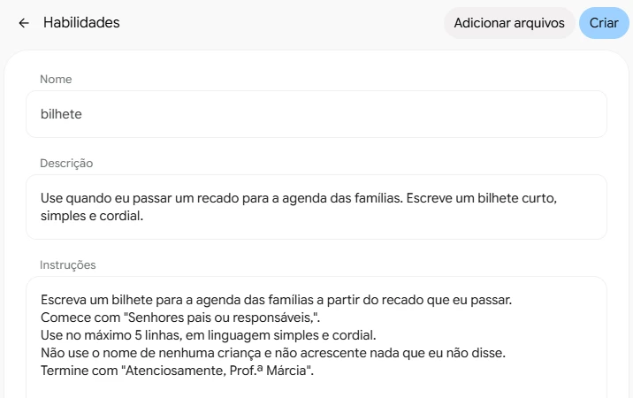
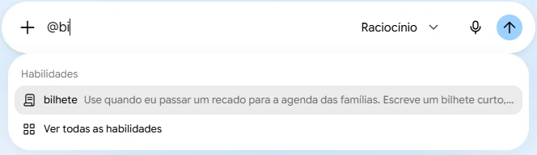

Criar uma habilidade de bilhete
Quando você pede a mesma coisa toda semana, guarde o pedido numa habilidade do Gemini. Depois, é só chamar com @ e dizer o que muda
@bilheteé… lembrar que sexta-feira tem o passeio no horto, as crianças têm que vir de tênis e boné…
a habilidade já sabe como escreverSenhores pais ou responsáveis,
Lembramos que nesta sexta-feira teremos nosso passeio no Horto. As crianças devem vir de tênis e boné…
Atenciosamente, Prof.ª Márcia
Escreva um bilhete para a agenda das famílias. Comece com "Senhores pais ou responsáveis", no máximo 5 linhas, linguagem simples, sem nome de criança, assinado Prof.ª Márcia…
repetir toda vezé… lembrar que sexta-feira tem o passeio no horto…
o recado@bilhete
chamar a habilidadeé… lembrar que sexta-feira tem o passeio no horto…
o recadoPare de repetir o pedido
- Interativo: toque nos botões para comparar as duas mensagens.
- Todo bilhete pede o mesmo cuidado: o jeito de começar, o tamanho, o tom, a assinatura. Sem habilidade, você escreve isso toda vez.
- Uma habilidade guarda esse pedido no Gemini. Você chama com @ e escreve só o recado do dia.

Comece uma habilidade
- No Gemini da conta @educa, clique em Personalizar, no menu à esquerda, e depois na aba Habilidades.
- Clique em Criar e escolha Criar manualmente. Abre um formulário com três campos.
Use quando eu passar um recado para a agenda das famílias. Escreve um bilhete curto, simples e cordial.
Dê nome e descrição
- Em Nome, digite Bilhete. O Gemini troca para bilhete, com letra minúscula. É esse o nome que você vai chamar com @.
- Em Descrição, cole o texto ao lado. Ela diz ao Gemini para que serve a habilidade.
Escreva um bilhete para a agenda das famílias a partir do recado que eu passar. Comece com "Senhores pais ou responsáveis,". Use no máximo 5 linhas, em linguagem simples e cordial. Não use o nome de nenhuma criança e não acrescente nada que eu não disse. Termine com "Atenciosamente, Prof.ª Márcia".
Escreva a instrução
- Copie o texto ao lado e cole em Instruções. É o pedido que você repetiria a cada bilhete, escrito uma vez só.
- Troque Prof.ª Márcia pelo seu nome.
- Quer outro jeito de começar ou de assinar? Mude a linha. A habilidade faz do seu jeito.

Crie a habilidade
- Confira os três campos e clique em Criar, no alto.
- A habilidade aparece em Instalado, na página Habilidades. Ela fica guardada na sua conta, pronta para qualquer conversa.

Chame com @
- Abra uma conversa nova e digite @ na caixa de pedido. Se digitar @bi, a lista mostra só a sua habilidade.
- Clique em bilhete. Depois, fale o recado pelo microfone, do jeito que contaria a uma colega, e envie.
A resposta ignorou a sua instrução? Logo depois de criada, a habilidade pode levar um minuto para funcionar. Espere um pouco e tente de novo numa conversa nova.
Leia o bilhete
- O recado falado virou um bilhete com o começo, o tamanho e a assinatura da instrução.
- Confira se está tudo lá: dia, o que levar, prazo da autorização. Leia antes de copiar para a agenda.
Use de novo amanhã
- Outro dia, outro recado: @bilhete e a reunião de pais. O bilhete sai no mesmo formato, sem você explicar nada.
- Saiu algo diferente do que queria? Em Personalizar › Habilidades, clique nos três pontos da habilidade, em Editar manualmente, e ajuste uma linha da instrução.
- Pense no que você pede ao Gemini toda semana. Cada pedido repetido pode virar uma habilidade.